Module 3 · Electronic Spreadsheet Fundamentals
Five short words that total, average, count and find the highest and lowest values in any list.
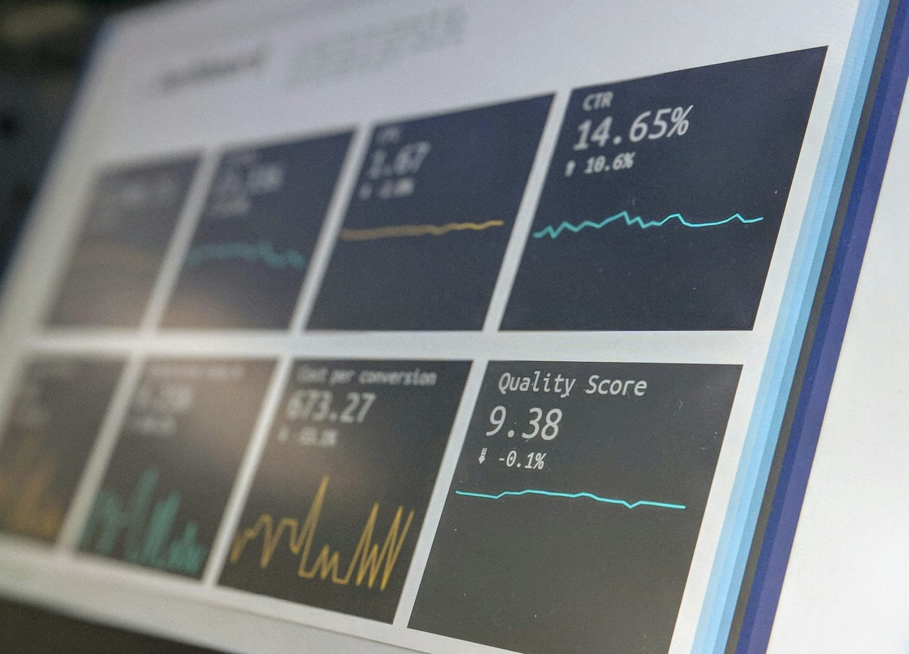
Welcome back. Open your inventory: column E has formulas, and E10 has that long plus formula from Topic 3.3.
Today we meet five functions, the most used in any office spreadsheet. Lab 3 specifically checks for =SUM() and =AVERAGE(), so by the end of this topic two more Lab 3 requirements will be done. We'll check every answer against exact figures, so keep your sheet open beside Zoom.
Warm-up · vote in the chat
30 seconds=E2+E3+E4+E5+E6+E7+E8+E9+E10+E11+E12+E13+…
…and so on, 300 times
=SUM(E2:E301)
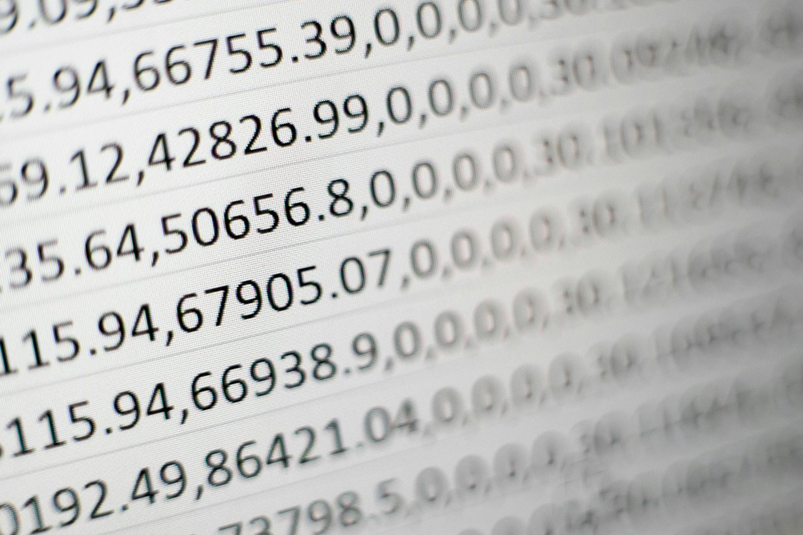
Everyone votes B, with laughter. Point out that A is what we did in 3.3 with only eight rows, and it was already long.
For the bonus, collect guesses, then promise: with AutoSum it takes about two seconds, and you'll do it yourself in ten minutes. Show the photo: long printed columns like this used to be added with a calculator and a ruler. A function does it without a single typo.
By the end of this topic
Three goals: explain, use, avoid.
These five functions answer most questions a section chief asks about a list: "How much in total? What's the average? How many? What's the biggest and the smallest?" If you can answer those in seconds, you're already ahead of many office spreadsheets. Read the Lab 3 line aloud.
The big idea
=SUM(E2:E9)
Rice cooker analogy: you don't control the heat minute by minute; you press Cook. A function is that button. SUM already knows how to add any number of cells.
Read the syntax piece by piece: equals means calculate; SUM is the name; the parentheses hold the input; E2 colon E9 means "E2 through E9", the range we learned in 3.1. Function names aren't case-sensitive: typing =sum(e2:e9) works, and the sheet capitalises it for you.
Meet the five
Adds all the numbers.
"How much in total?"
Total ÷ how many numbers.
"What's typical?"
Counts cells that hold numbers.
"How many?"
Smallest number.
"What's the lowest?"
Largest number.
"What's the highest?"
Each function answers one plain question. Ask the chat to match a work question to a function: "How many items are in our inventory?" COUNT. "Which supply costs the most per unit?" MAX. "What's our total stock value?" SUM.
Point out that the pattern never changes: equals, name, parentheses, range. Learn one and you've learned all five.
The fastest way
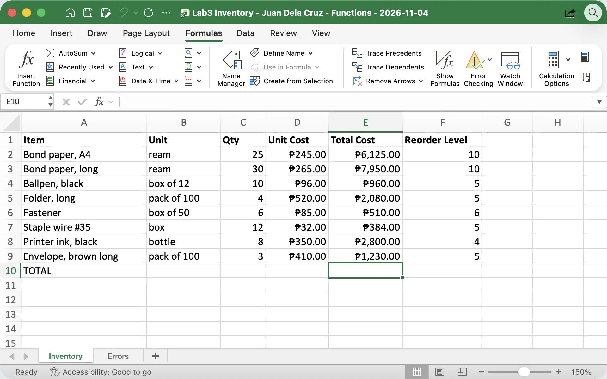
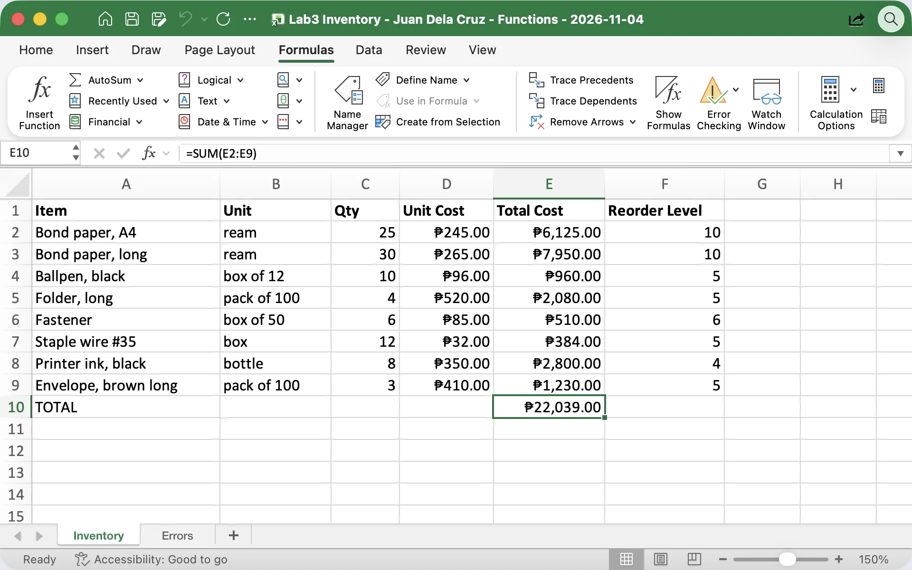
Microsoft Excel for Mac, sample Lab3 Inventory. Windows: Alt+=. Mac: Cmd+Shift+T or Formulas › AutoSum.
Demo in Excel: click E10, delete the old formula, press Alt+equals. The dashed border shows the range Excel guessed. Read it before pressing Enter: E2 to E9, correct.
AutoSum guesses by looking up until it hits a blank or a label. That's why the blank rows we removed in 3.2 matter: a blank row in the middle makes it stop early. Google Sheets and Calc users: use the Σ button. Typing =SUM( and dragging over the cells works everywhere.
SUM on the inventory
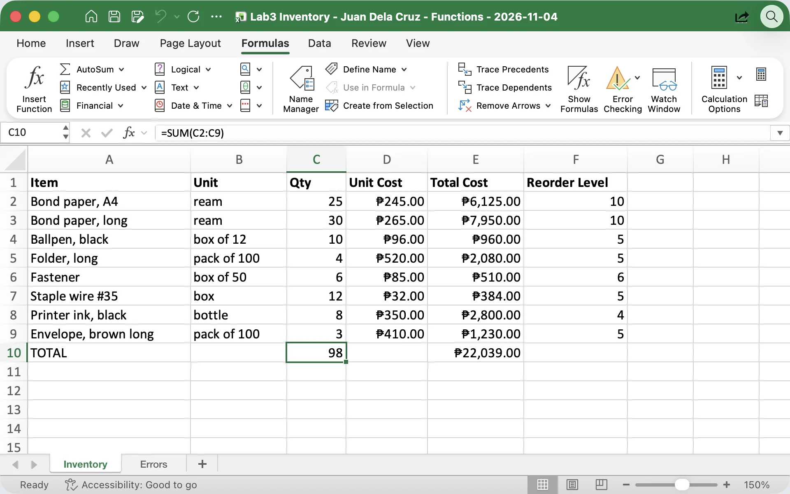
Microsoft Excel for Mac, sample Lab3 Inventory.
Have everyone put =SUM(C2:C9) in C10 and confirm 98 in the chat. Then E10: ₱22,039.00, the same number as the long plus formula, now in one short function.
Note that 98 mixes reams, boxes and bottles, so it's only a rough count of "units on hand". The peso total is the more meaningful figure for a report. Leave Unit Cost unsummed: adding prices per unit doesn't mean anything.
AVERAGE
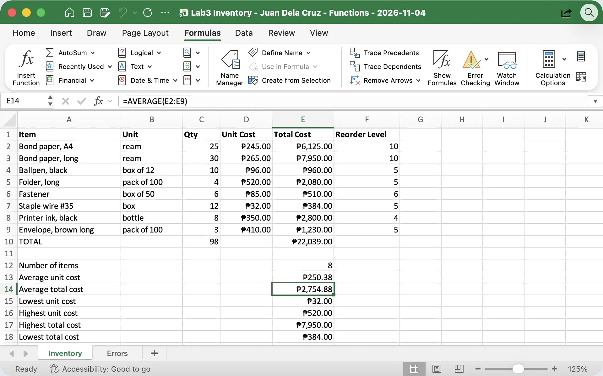
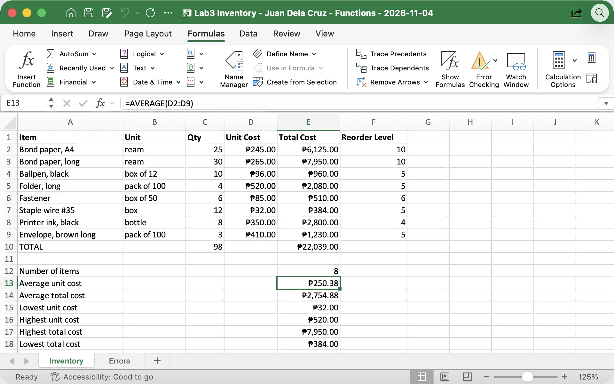
Microsoft Excel for Mac, sample Lab3 Inventory. The summary block from the Try-it slide, rows 12 to 18.
Put =AVERAGE(E2:E9) somewhere below the table, for example in E12. Explain the rounding: the true value is 2,754.875, and Currency format with two decimals shows ₱2,754.88. The cell still holds the exact value.
Home example to make it stick: "What's our average grocery receipt this month?" Then the warning: if a week's amount isn't known yet, leave it blank, don't type 0. A zero means "we spent nothing" and drags the average down.
Counting
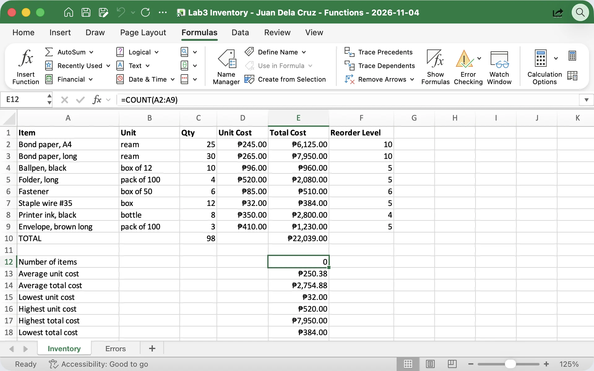
Microsoft Excel for Mac, sample Lab3 Inventory.
Ask the chat to predict =COUNT(A2:A9) before you reveal it. Many say 8. It's 0, because COUNT only counts cells with numbers, and item names are text.
That's where COUNTA comes in: "count all", any cell that isn't empty. Both are useful: COUNT on the Qty column tells you how many items have a quantity entered; COUNTA on names tells you how many rows you have. Mention briefly that a sneaky text quantity would make COUNT(C2:C9) return 7, a handy warning sign.
Lowest and highest
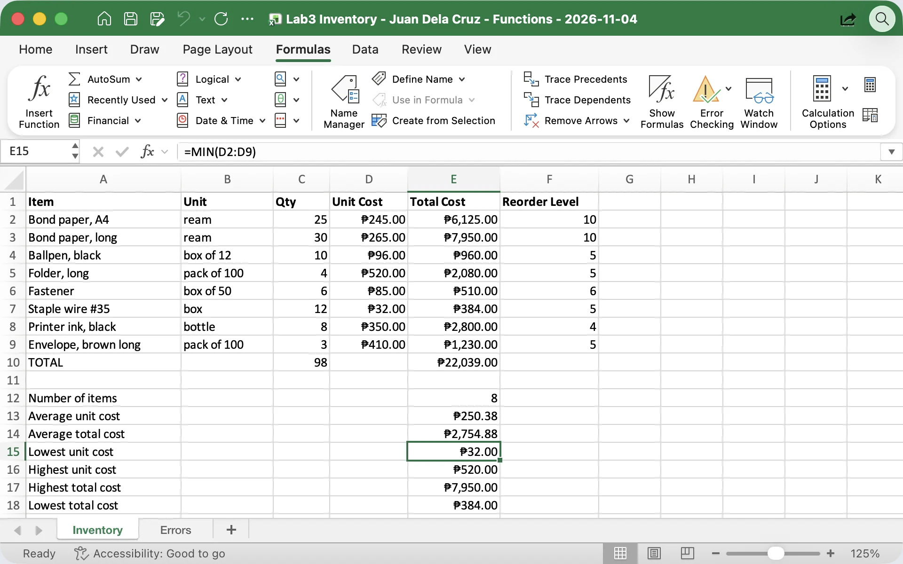
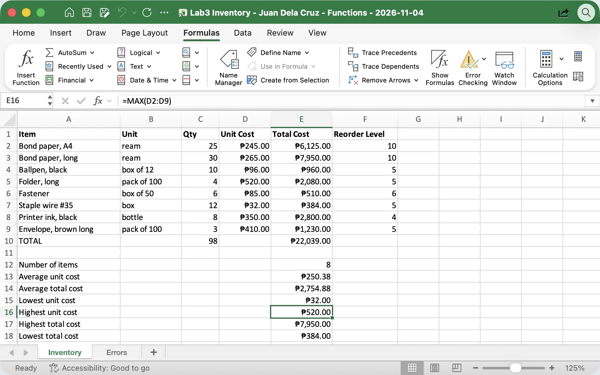
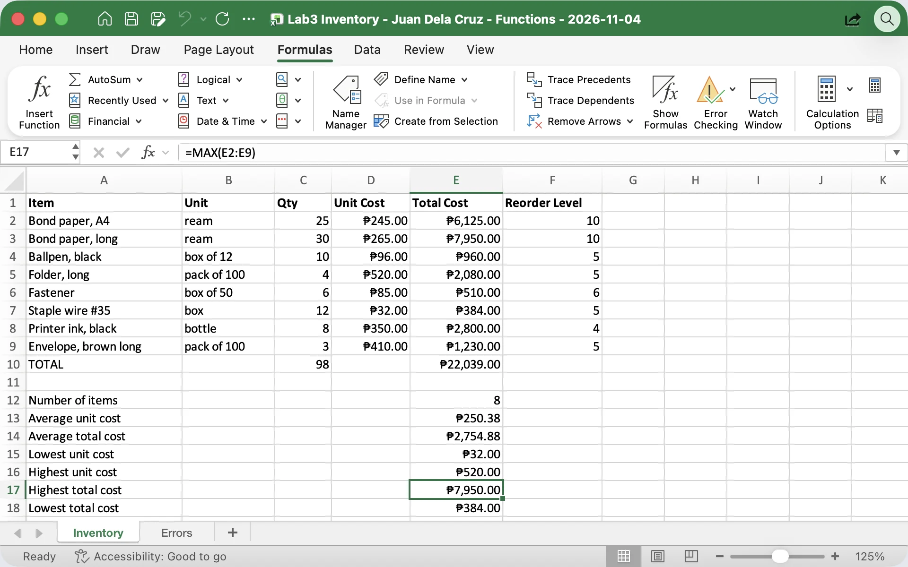
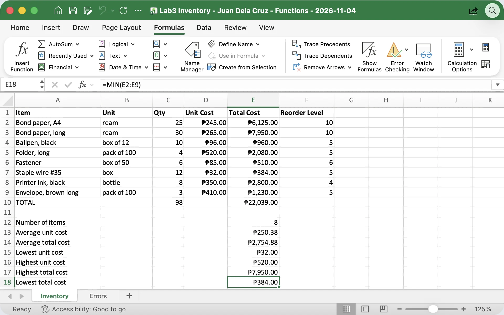
Microsoft Excel for Mac, sample Lab3 Inventory.
MIN and MAX return the value, not the item name. You still look at the table to see which item it is.
Interesting point to discuss: the folder has the highest unit cost, but long bond paper has the highest total cost, because we stock 30 reams of it. Ask: "If the chief wants to cut supply spending, which number should we look at?" The total cost, so MAX of column E points straight to bond paper.
Try it now · hands-on
| A | E | |
|---|---|---|
| 10 | TOTAL (also C10: =SUM(C2:C9)) | =SUM(E2:E9) |
| 12 | Number of items | =COUNT(C2:C9) |
| 13 | Average unit cost | =AVERAGE(D2:D9) |
| 14 | Average total cost | =AVERAGE(E2:E9) |
| 15 | Lowest unit cost | =MIN(D2:D9) |
| 16 | Highest unit cost | =MAX(D2:D9) |
| 17 | Highest total cost | =MAX(E2:E9) |
| 18 | Lowest total cost | =MIN(E2:E9) |
Check yours, then click to compare.
| Cell | Result |
|---|---|
| C10 · E10 | 98 · ₱22,039.00 |
| E12 | 8 |
| E13 · E14 | ₱250.38 · ₱2,754.88 |
| E15 · E16 | ₱32.00 · ₱520.00 |
| E17 · E18 | ₱7,950.00 · ₱384.00 |
Start the 10-minute timer. Leave row 11 empty as a gap between the table and the summary. Remind them: ranges stop at row 9, never row 10, or they'll count the total too.
If E12 shows ₱8.00, it picked up Currency formatting (for example from formatting the whole column); set it to Number or General so it reads 8. When most are done, reveal the key. Anyone with a different number: click the cell, read the range in the formula bar out loud. It's almost always the range.
Why bother?
| =E2+E3+E4+E5+E6+E7+E8+E9 | =SUM(E2:E9) | |
|---|---|---|
| Length | Grows with every row; 300 rows is unreadable | Same length for 8 rows or 8,000 |
| Typing errors | Easy to skip or repeat a cell (E6+E6) | One range, easy to check |
| New row inserted inside | Not included: total is silently wrong | Range stretches to include it |
| Text cell in the range | #VALUE! error | Skips the text cell (so check your types) |
| Checking by a reviewer | Must read every address | Reads one range: E2 to E9 |
Do the demo from the tip box live. Put the long plus formula in E11 and SUM in E10, then insert a row inside the table and add an item. SUM updates; the plus formula still adds only the original eight cells. In a real report, that's a silently wrong total.
Note the text row: SUM skipping text sounds friendly, but it can hide the "numbers stored as text" problem from 3.2. Undo the inserted row when done.
Watch out
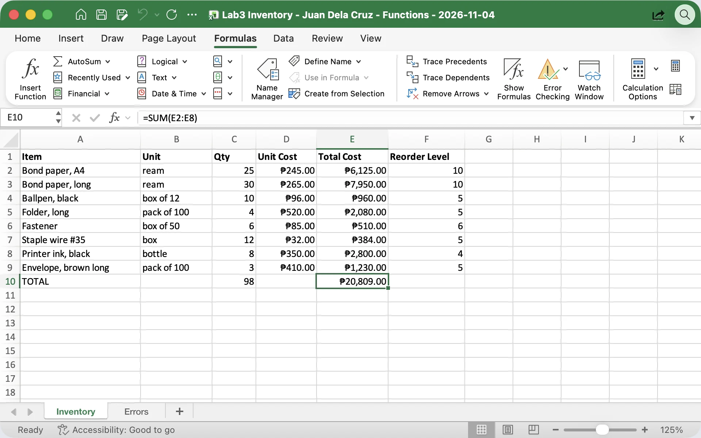
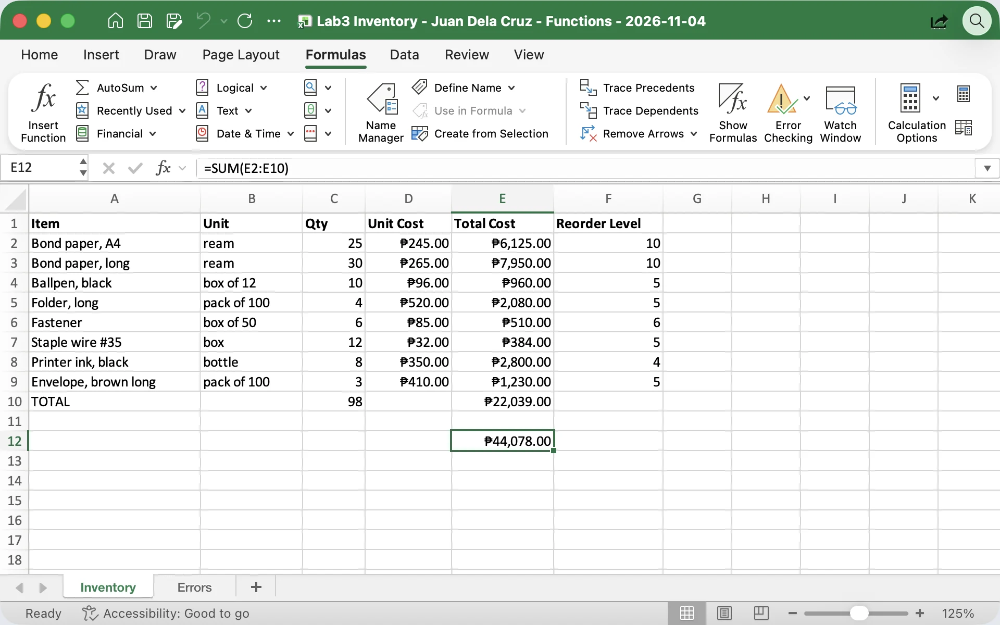
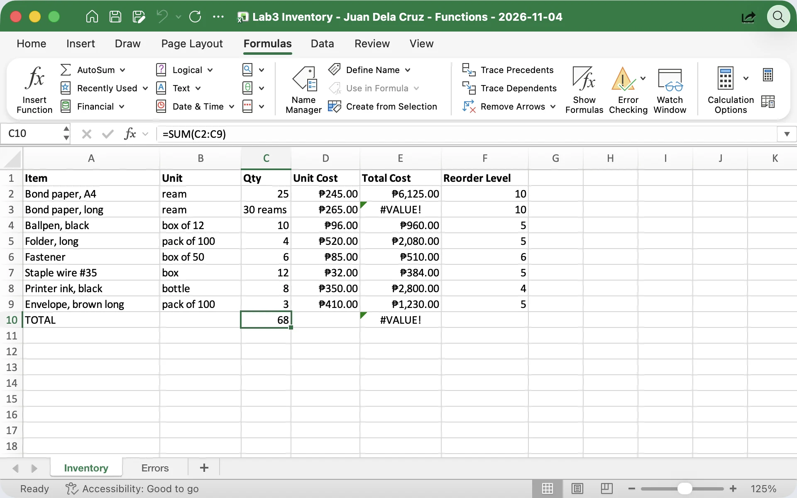
Microsoft Excel for Mac, sample Lab3 Inventory. Mistakes made on purpose.
These three cause most wrong totals in office files. Show each one live and let them see the wrong numbers appear.
Mistake 2 often happens when someone selects the whole column including the total. In the total cell itself, Excel shows a circular reference warning because the cell would be adding itself. Mistake 3 links back to 3.2: one value per cell, units in their own column. The fix is always the same habit: read the formula bar.
Use them everywhere
| A | B | |
|---|---|---|
| 1 | Day | Clients |
| 2 | Mon | 34 |
| 3 | Tue | 41 |
| 4 | Wed | 28 |
| 5 | Thu | 52 |
| 6 | Fri | 45 |
| 7 | =SUM(B2:B6) | 200 |
| 8 | =AVERAGE(B2:B6) | 40 |
| 9 | =MAX · =MIN | 52 · 28 |
Also: totals for a supplies request, COUNTA of names on an attendance sheet.
| A | C | |
|---|---|---|
| 1 | Item (8 rows) | Actual |
| … | Rice … Savings | C2:C9 |
| 10 | =SUM(C2:C9) | ₱21,210.00 |
| 11 | =SUM(B2:B9) budget | ₱20,250.00 |
| 12 | =AVERAGE(C2:C9) | ₱2,651.25 |
| 13 | =MAX(C2:C9) groceries | ₱5,480.00 |
| 14 | =MIN(C2:C9) water | ₱420.00 |
Over budget by ₱960.00 this month: =C10-C11.
Office side: a simple daily tally of clients served at a front desk, sample numbers. 200 for the week, an average of 40 a day, busiest Thursday with 52, quietest Wednesday with 28. That's a ready answer when the chief asks how busy the week was.
Home side: the same sample household budget from 3.2 and 3.3. Actual spending is ₱21,210 against a budget of ₱20,250: ₱960 over. Groceries are the biggest item. Ask: "What will you SUM first at home this weekend?"
Watch · 5 minutes
A rice cooker, AutoSum and three classic mistakes: see how SUM, AVERAGE, COUNT, MIN and MAX total, average, count and find the extremes of the Office Supplies Inventory.
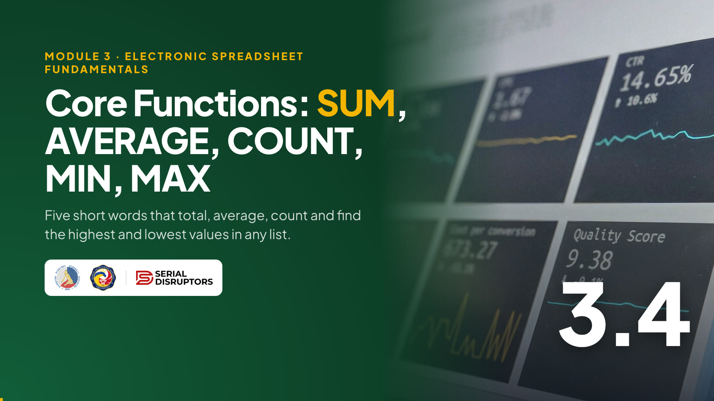
4:55Introduce the video in one or two sentences, then read the While watching task aloud so everyone knows what to look for.
Press → to open the video full screen. In Zoom or Meet, share this tab with computer sound turned on.
Space or K plays and pauses (or click the video). C turns captions on or off; the speed button offers 1.25× and 0.85×. The arrows still move between slides, and the video pauses when you leave this slide.
Length 4:55. Pause anywhere to take a question; captions stay on screen for anyone without sound.
After the video, go back to the While watching task: ask two or three people for their answers.
Quick check · click an answer
Let them answer in the chat first, then click each option. B, ₱2,754.88.
Each wrong option is another function's answer on the same data, so this doubles as a review: A is SUM, C is the average of a different column, D is COUNT. If people mixed up C, remind them: the range decides the answer. Column D is unit cost, column E is total cost.
Recap · Topic 3.4
=FUNCTION(range). AutoSum with Alt+= writes it for you; check the range first.
SUM ₱22,039.00 · AVERAGE ₱2,754.88 · COUNT 8 · MIN ₱32.00 · MAX ₱520.00
Wrong range, counting the total row, text in number cells. Read the formula bar.
Next · 3.5 Cell Referencing Basics: why C2 becomes C3 when you fill down, and how the $ sign keeps a reference fixed.
Summarize with the real numbers from their own sheets. Ask everyone to confirm in the chat that E10 shows ₱22,039.00 and E14 shows ₱2,754.88. That's two Lab 3 requirements done: SUM and AVERAGE.
Bridge to 3.5: "When we filled =C2*D2 down, it became C3*D3 on its own. Sometimes we want that, sometimes we don't. Next topic: relative and absolute references, and the mysterious dollar sign."